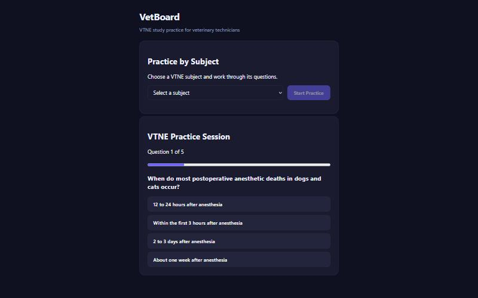
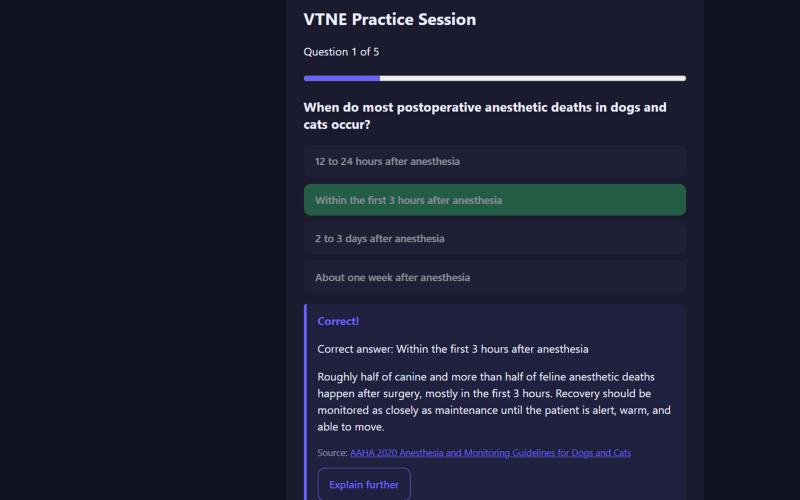

VetBoard · Project summary
Exam prep that shows its sources.
New vet tech graduates needed a focused way to study for the VTNE. I turned an AI trivia app I'd built into a study tool where every answer is checked and cited. It's now used at a vet tech school, across every Amerivet hospital in my market, and by several vet tech communities on social media.
Role
Product owner, designer and developer
Users
Vet tech students and new grads preparing for the VTNE
Adoption
A vet tech school, Amerivet hospitals in my market, vet tech groups
Stack
React · Vite · Express · Google Gemini · Vercel
01 · The problem
A fun app isn't a study tool.
The original app generated trivia on any topic, including from photos. It was fun to demo, but it was the wrong tool for someone studying for a licensing exam. Questions on the fly can drift, a random topic doesn't follow the exam outline, and a student has no way to tell whether an answer is right.
Exam takers needed questions that track the real exam, explanations they can trust, and a fast way to practice in short sessions.
02 · Product decisions
Four calls that shaped the product.
01
Cut features to fit the job
I removed the random-topic and photo question generators and kept two modes: practice by subject, and a mixed five-question session.
02
Pre-generate, don't improvise
Questions come from a bank built ahead of time instead of on demand, so every student sees vetted content and answers stay consistent.
03
An AI cross-check instead of a human bottleneck
Having a person review every question wasn't sustainable. A second AI pass cross-checks each one, and students can flag a problem from any question.
04
Keep AI where it helps learning
AI stays in the product as an "Explain further" tutor, so a student who misses a question can go deeper without leaving the session.
03 · The experience
Answer, see why, see where it came from.


04 · Content sources
Built on references vet techs already trust.
- AAVSB VTNE content outlineTopics and weighting
- Merck Veterinary ManualClinical reference
- AAHA guidelinesStandards of care
- RECOVER InitiativeCPR guidelines
- NAVTA · vtneexam.comProfession and exam guidance